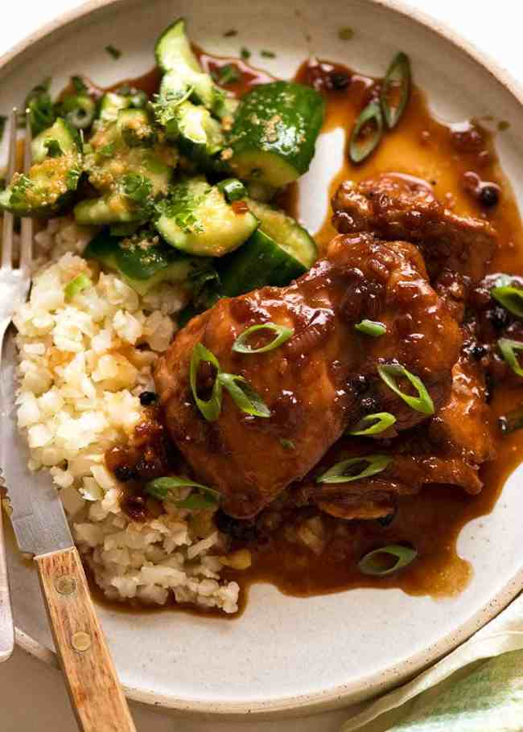

Home
Adobo Recipe

Adobo is a philipino dish made usually with chicken and pork served over rice
Ingredients
Method
Mix all ingredients together and let marinade for 2 minutes
Sear the chicken or pork
Let simmer with rest of marinade for 25 minutes until the liquid turns to a glaze
Serve over rice